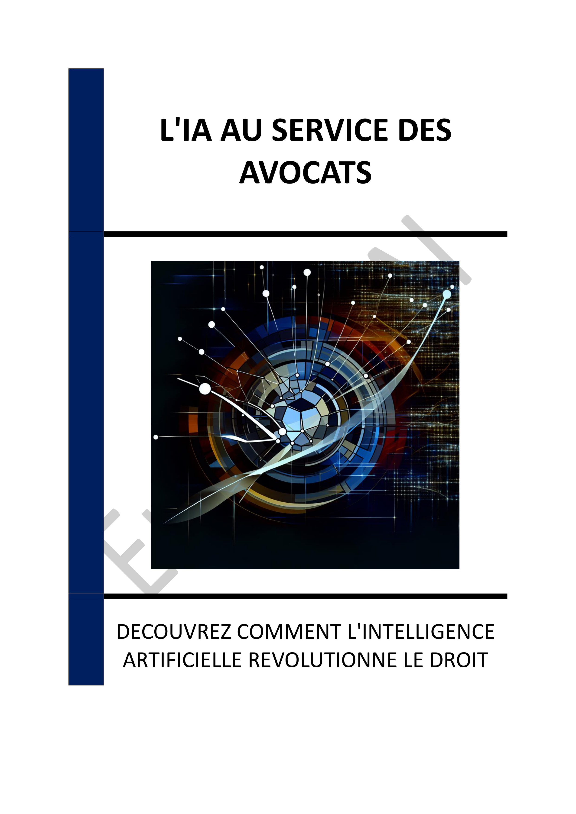

- INTRODUCTION - L'ÈRE DE L'IA DANS LE DOMAINE JURIDIQUE
- Chapitre 1 - INTRODUCTION À L'IA DANS LE DOMAINE JURIDIQUE
- Chapitre 2 - AVANCÉES TECHNOLOGIQUES EN IA ET LEUR IMPACT
- Chapitre 3 - OPTIMISATION DES PROCESSUS INTERNES GRÂCE À L'IA
- Chapitre 4 - AMÉLIORATION DE L'EXPÉRIENCE CLIENT AVEC L'IA
- Chapitre 5 - ÉTUDES DE CAS DE L'IA DANS LES CABINETS D'AVOCATS
- Chapitre 6 - ENJEUX ÉTHIQUES ET RÉGLEMENTAIRES DE L'IA
- Chapitre 7 - GESTION DES CONNAISSANCES ET CAPITALISATION DU SAVOIR
- Chapitre 8 - PERSPECTIVES D'AVENIR POUR L'IA DANS LE DROIT
- CONCLUSION - VERS UN AVENIR JURIDIQUE TRANSFORMÉ PAR L'IA
📄 Consulter les annexes du livre
Mentions légales